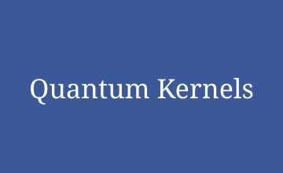
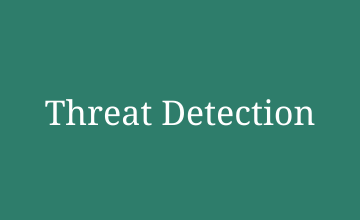
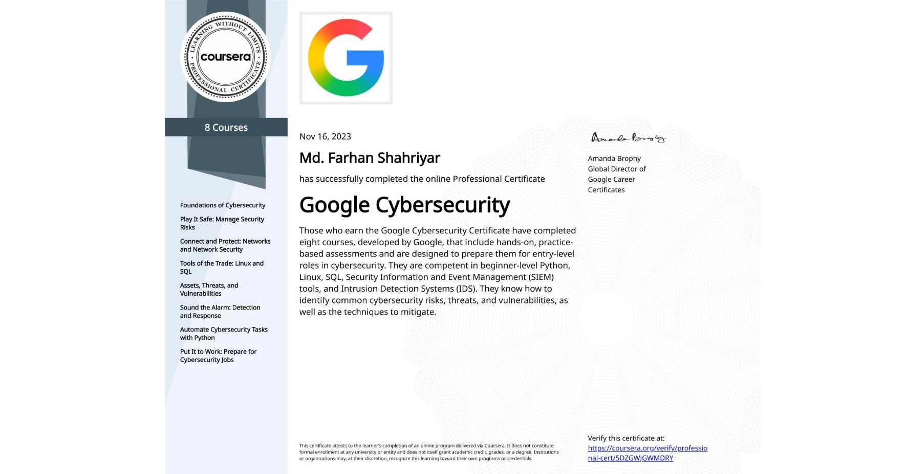
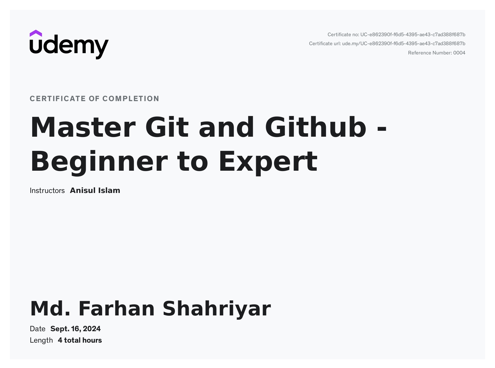
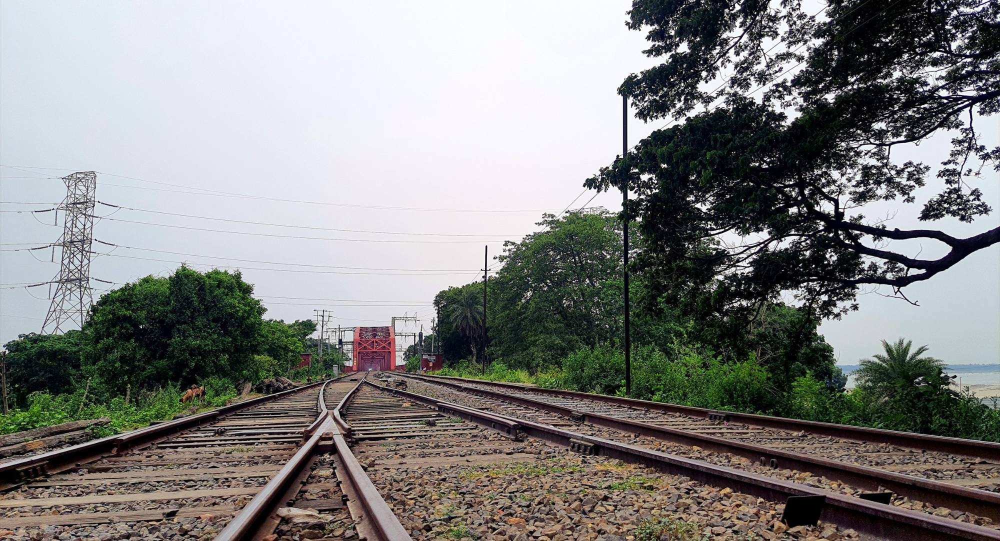

Quantum Key Distribution With Steganography: A Systematic Review of Hybrid Security Frameworks for Postquantum Cryptography
Quantum Engineering, 2026
paper | DOI: 10.1155/que2/7042681
Quantum ML · Cybersecurity · Cryptography
I am an M.Sc. student and researcher in the Department of Computer Science and Engineering, Hajee Mohammad Danesh Science and Technology University (HSTU), where my thesis on hybrid quantum–classical secure file transmission is supervised by Prof. Dr. Md. Abdulla Al Mamun and funded by the NST Fellowship. I am also the Team Lead at ZogBiyog, and a prospective Ph.D. student looking for research-focused doctoral positions.
My research spans quantum machine learning, cybersecurity and cryptography. My main focus is on hybrid quantum-classical models, algorithmic efficiency, and how their performance compares with classical methods.
My published and ongoing research covers quantum feature maps, quantum kernels, feature selection, quantum key distribution (QKD), threat detection, image processing and privacy-preserving learning, with growing research on efficient and reliable AI for security.
your.email[at]example[dot]com.
Hajee Mohammad Danesh Science and Technology University (HSTU), Dinajpur, Bangladesh
Quantum Key Distribution With Steganography: A Systematic Review of Hybrid Security Frameworks for Postquantum Cryptography
Quantum Engineering, 2026
paper | DOI: 10.1155/que2/7042681


CSE 531 Software Project Management, M.Sc. in CSE, HSTU, under Prof. Dr. Ashis Kumar Mandal.
proposal | DOI: 10.13140/RG.2.2.27319.07845/3
Quantum machine learning, quantum key distribution and AI for cybersecurity.
Research partner and mentor to Abdullah Md Raihan Chy, my co-author on PhishVQC and the ResNet–QSVM paper. I supported him from early research work through the Ph.D. application process, and he went on to receive Ph.D. offers from seven universities (featured in America Bangla, Oct 2026).
Awarded under the Physical Science group to fund my M.Sc. thesis research on hybrid quantum–classical secure file transmission.
Solved three algorithmic problems on permutations and combinatorics, algorithm design and data structures.
Fully funded government merit stipend awarded to students ranking in the top percentile of their regional education board.


Exploring new places, cultures and landscapes.
Playing and following the game; it keeps me active and team-minded.
Capturing moments from my travels and everyday life.

The tracks lean toward the same bridge, so do our destinations really meet when we reach the end of the tracks on this earth?
Each grain sits beside its neighbours. Could that arrangement carry information from one generation to the next, using a bit or a qubit?
The Sun has been burning for billions of years, far longer than any family chain. If it knows the chain, does it know the story of every one of us here now?
I welcome conversations with faculty about Ph.D. positions, and with researchers interested in quantum machine learning,
cryptography and AI for security. Reach me at your.email[at]example[dot]com, or through
ResearchGate and
Google Scholar.